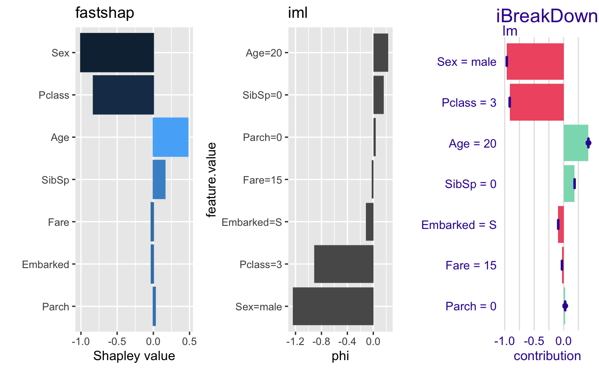
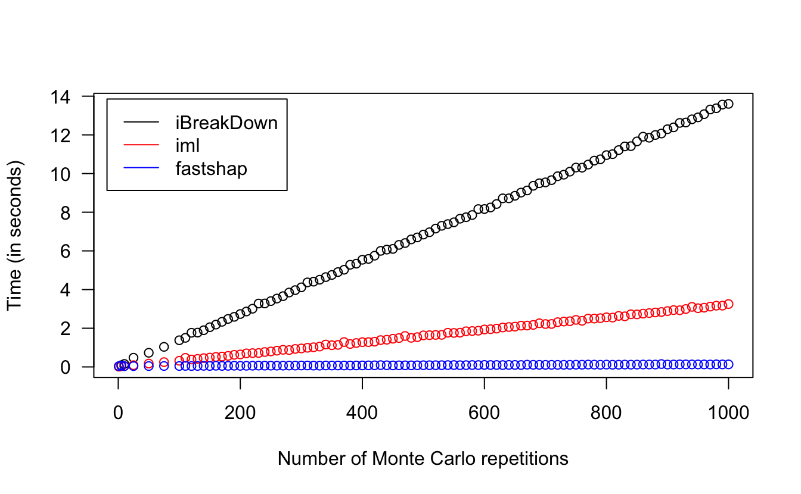

This notebook provides a brief example comparing various implementations of Shapley values using Kaggle’s Titanic: Machine Learning from Disaster competition. While the true focus of the competition is to use machine learning to create a model that predicts which passengers survived the Titanic shipwreck, we’ll focus on explaining predictions from a simple logistic regression model.
To start, we’ll load the data, which are conveniently available in the titanic package on CRAN, and do a little bit of cleaning.
# Read in the data and clean it up a bit
titanic <- titanic::titanic_train
features <- c(
"Survived", # passenger survival indicator
"Pclass", # passenger class
"Sex", # gender
"Age", # age
"SibSp", # number of siblings/spouses aboard
"Parch", # number of parents/children aboard
"Fare", # passenger fare
"Embarked" # port of embarkation
)
titanic <- titanic[, features]
titanic$Survived <- as.factor(titanic$Survived)
titanic <- na.omit(titanic)
# Data frame containing just the features
X <- subset(titanic, select = -Survived)Next, we’ll use the stats::glm() to fit a logistic regression model with only main effects (i.e., no tw-way interactions, etc.).
Suppose we wanted to explain the predicted survival probability for a new passenger named Jack:
jack <- data.frame(
Pclass = 3,
Sex = factor("male", levels = c("female", "male")),
Age = 20,
SibSp = 0,
Parch = 0,
Fare = 15, # lower end of third-class ticket prices
Embarked = factor("S", levels = c("", "C", "Q", "S"))
)Our logistic regression model predicts that Jack’s log-odds of survival is
## 1
## -1.845561Yikes, that’s equivalent to estimated 13.64% predicted probability of survival! With a baseline (i.e., average) survival rate of 40.62%, can we explain why the model predicts Jack to be much lower? Enter…Shapley values.
There is a growing number of R packages that provide Shapley explanations, the two most popular arguably being iml and iBreakDown. In this example, we’ll compare those with fastshap.
To start, we need to define a few things (prediction wrapper, as well as both iml- and iBreakDown-related helpers).
# Prediction wrapper to compute predcited probability of survive
pfun <- function(object, newdata) {
predict(object, newdata = newdata)
}
# DALEX-based helper for iBreakDown
explainer <- DALEX::explain(fit, data = X, y = titanic$Survived, predict_function = pfun, verbose = FALSE)
# Helper for iml
predictor <- iml::Predictor$new(fit, data = titanic, y = "Survived",
predict.fun = pfun)Next, we call each implementation’s Shapley-related function to compute explanations for Jack’s prediction using 100 Monte Carlo repetitions.
# Compute explanations
set.seed(1039) # for reproducibility
ex1 <- iBreakDown::shap(explainer, B = 100, new_observation = jack)
ex2 <- iml::Shapley$new(predictor, x.interest = jack, sample.size = 100)
ex3 <- fastshap::explain(fit, X = X, pred_wrapper = pfun, nsim = 100,
newdata = jack)
# Plot results
library(ggplot2) # for `autoplot()` function
p3 <- plot(ex1) + ggtitle("iBreakDown")
p2 <- plot(ex2) + ggtitle("iml")
p1 <- autoplot(ex3, type = "contribution") + ggtitle("fastshap")
fastshap::grid.arrange(p1, p2, p3, nrow = 1)
Each package comes loaded with it’s own bells and whistles (e.g., iml and iBreakDown have particularly fantastic visualizations). The main selling point of fastshap is speed! For example, all three packages (in fact, all general and practical implementations of Shapley values) use in approximation algorithm that often requires a large number of Monte Carlo repetitions to achieve accurate results. Below is a simple benchmark looking at the estimated time (in seconds) to explain Jack’s prediction as a function of the number of Monte Carlo repetitions.
nsims <- c(1, 5, 10, 25, 50, 75, 100, seq(from = 110, to = 1000, by = 10))
times1 <- times2 <- times3 <- numeric(length(nsims))
set.seed(904)
for (i in seq_along(nsims)) {
message("nsim = ", nsims[i], "...")
times1[i] <- system.time({
iBreakDown::shap(explainer, B = nsims[i], new_observation = jack)
})["elapsed"]
times2[i] <- system.time({
iml::Shapley$new(predictor, x.interest = jack, sample.size = nsims[i])
})["elapsed"]
times3[i] <- system.time({
fastshap::explain(fit, X = X, newdata = jack, pred_wrapper = pfun,
nsim = nsims[i])
})["elapsed"]
}
plot(nsims, times1, type = "b", xlab = "Number of Monte Carlo repetitions",
ylab = "Time (in seconds)", las = 1,
xlim = c(0, max(nsims)), ylim = c(0, max(times1, times2, times3)))
lines(nsims, times2, type = "b", col = "red")
lines(nsims, times3, type = "b", col = "blue")
legend("topleft",
legend = c("iBreakDown", "iml", "fastshap"),
lty = c(1, 1, 1), col = c("black", "red", "blue"), inset = 0.02)
Additionally, for (generalized) linear models and xgboost models, fastshap can compute exact Shapley values lightning fast:
## user system elapsed
## 0.003 0.000 0.003## # A tibble: 1 x 7
## Pclass Sex Age SibSp Parch Fare Embarked
## <dbl> <dbl> <dbl> <dbl> <dbl> <dbl> <dbl>
## 1 -0.915 -0.964 0.420 0.186 0.0260 -0.0282 -0.0919# Fast and accurate approaximation that would work for any type of model
system.time({
set.seed(1228) # for reproducibility
ex_approx <- fastshap::explain(fit, X = X, newdata = jack, adjust = TRUE,
pred_wrapper = pfun, nsim = 10000)
})## user system elapsed
## 1.156 0.061 1.217## # A tibble: 1 x 7
## Pclass Sex Age SibSp Parch Fare Embarked
## <dbl> <dbl> <dbl> <dbl> <dbl> <dbl> <dbl>
## 1 -0.929 -0.959 0.428 0.187 0.0256 -0.0284 -0.0916